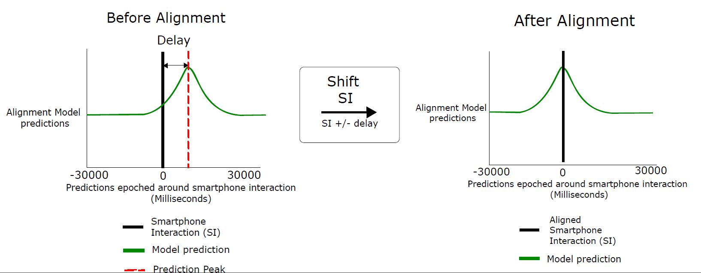

Decision tree¶
The decision tree function performs the actual alignment of the data.
For the details on the alignment problem see: Data alignment: Moving Averages (MA)
Participant selection¶
The alignment model was only trained on a small subset of participants. This model had to generalize to many other participants and a different type of data, the smartphone interactions. For some participants with atypical movement patterns, this generalization was not entirely successful. Therefore, these participants were filtered out based on a few heuristics :
The first heuristic was based on the BS data. When the averaged BS signal is small, there is no clear and distinct movement pattern. For these participants, the alignment model predictions were near 0. To identify these participants, the BS signal was epoched around the SIs, the average BS signal across all epochs was calculated. Participants where the peak of the average BS signal was smaller than 0.1630 were excluded. This value was chosen as it was the 25th percentile from the distribution of the peak BS signals across all participants.
After epoching the model predictions around SIs, for some participants, there were many large predicted peaks. This indicates that the alignment model was unable to identify the exact time where the SI took place. Since it is unclear where exactly the delay is, these participants were excluded in two different ways.
First, through visual analysis of the average BS signal around the SIs and the average model predictions around the SIs, it was identified that in these participants, the two peaks are further than 1000 ms away from each other. In these participants, the model prediction is inaccurate because a delay larger than 1 second is unlikely.
Second, participants, where the difference between the largest and second largest peak is smaller than 0.15, were excluded.
Usage¶
decision_tree_alignment(EEG, BS, create_diagnostic_plot)
The function takes three arguments:
The loaded EEG data with the model predictions. An example on how to load the file follows: The set files containing the EEG data can be loaded with the pop_loadset function from EEGLAB.
path_to_EEG_data = '<Insert path>';
participant_file = 'DS31/08_13_01_04_19.set';
EEG = pop_loadset(strcat(path_to_EEG_data,participant_file));
The preprocessed BS data. This preprocessing is done with the function getcleanedbsdata, which performs outlier detection and removal. This is followed by bandpass filtering. The upper range of the bandpass filter should be chosen.
bandpass_upper_range = 10;
BS = getcleanedbsdata(EEG.Aligned.BS.Data(:,1), EEG.srate, [1 bandpass_upper_range]);
create_diagnostic_plot Boolean, 1 displays the aligned data plot and 0 does not create the plot.
Output¶
It returns two arguments:
EEG struct with a new cell: EEG.Aligned.Phone.Model contains the aligned phone data. If the participant’s file is ignored it is empty.
Simple, if simple is 1 then the model based alignment was performed, if simple is 3 then the participant file was ignored
Code¶
- alignment.decision_tree.decision_peak_prominance(epoched_model_predictions)¶
Participant selection based on the difference between the aligned largest peak and second largest peak
Usage: [simple, differences_bs] = decision_peak_prominance(epoched_model_predictions)
- Input(s):
epoched_model_predictions = epoched model predictions timelocked to aligned taps
- Output(s):
simple = 1: participant kept , 0 = participant rejected
differences_bs = difference between the largest peak and second largest peak
Author: R.M.D. Kock
- alignment.decision_tree.decision_tree_alignment(EEG, BS, create_diagnostic_plot)¶
Decides when to choose the model based alignment, BS based alignment, or old alignment
Usage: [EEG simple] = decision_tree_alignment(EEG, BS, create_diagnostic_plot)
- Input(s):
EEG = EEG data from one participant
BS = preprocessed BS dataset
create_diagnostic_plot = bool 1= yes create diagnostic plot, 0 = do not create plot
- Output(s):
EEG = EEG data from one participant where EEG.Aligned.Phone.Blind contains corrected alignment rules
simple = 1: model based alignment , 0 = no alignment empty field returned
Author: R.M.D. Kock